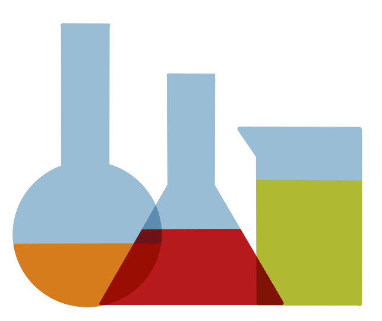
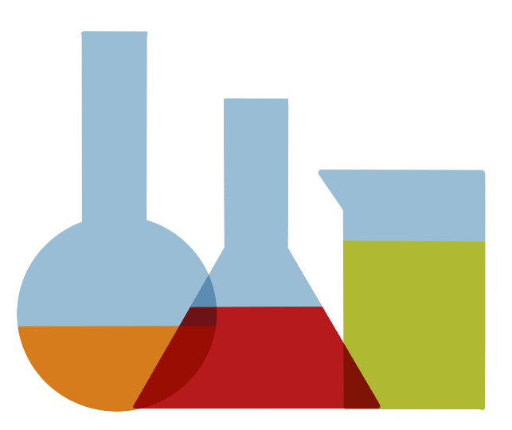

Quand ?
Métrologie : science de la mesure
Discipline qui comprend tous les aspects théoriques et pratiques des
mesurages.
Elle rassemble l'ensemble des techniques permettant de réaliser des
mesures, de les interpréter et d'assurer leur fiabilité.
 Quantifier un phénomène physique ou une réaction chimique

Déterminer les propriétés ou les caractéristiques d'un produit /
d'un échantillon
Quantifier un phénomène physique ou une réaction chimique

Déterminer les propriétés ou les caractéristiques d'un produit /
d'un échantillon
S'il y a mesure il y a métrologie
Pourquoi ?
Prendre en considération tous les aspects théoriques et pratiques ainsi que leurs limites lors d'une mesure permet d'en assurer la validité voire d'évaluer le niveau de confiance que l'on a dans cette mesure (incertitude de mesure)
Faire étalonner les équipements de mesure permet de
connaître leur biais et donc de maîtriser le doute (diminuer l'incertitude) autour de la mesure.
D'autres facteurs peuvent avoir une influence sur le résultat, des
études de
répétabilité ou de reproductibilité, des
campagnes interlaboratoires ou
une bibliographie peut permettre de quantifier ces facteurs.
Qui ?
Qu'est-ce que vous vendez à vos clients ?

 Des interprétations, une expertise
Des interprétations, une expertise

Tout le monde est concerné
Comment ?
Processus de raccordement et de suivi des équipements de mesure
Achat
Plage de mesure
Type de sortie (A/N)
Performances métrologiques
Méthode de mesure
Configuration
Configurer la sortie analogique (type et plage correspondante)
Unité de l'affichage
Méthode de mesure ou résolution souhaitée
Premier étalonnage
Définir les consignes d'étalonnage
Permet de connaître les erreurs de l'équipement (pour correction
ou pour évaluer l'incertitude)
Définir une périodicité d'étalonnage (12 à 36 mois)
Contrôle en service
Moyen interne de s'assurer avant ou après un essai que l'équipement ne dérive pas, dans une certaine mesure (à définir)
Etalonnage n
Périodiquement, le capteur est étalonné pour évaluer sa dérive
et ajuster les corrections à appliquer
La périodicté peut être revue si l'équipement ne dérive pas
Au CSTB, le Laboratoire Centrale de Métrologie (LCM) pilote la
fonction métrologie (procédure, outils, coordination) et garantis le
raccordement au
système international.
Toutes les informations sur les équipements de mesure, sont
accessibles par tous via la base
fiche de vie.
Intégration dans le processus affaire : traçabilité
Demande du Client
Etude de faisabilité
Identifier la méthode et le matériel de mesure
Envoi de l'offre
Retour Client
Planification
Préparation des essais
Etalonnage, vérification ou contrôles à prévoir
Réalisation des essais
Exploitation des mesures
Utilisation des corrections
Evaluation de l'incertitude